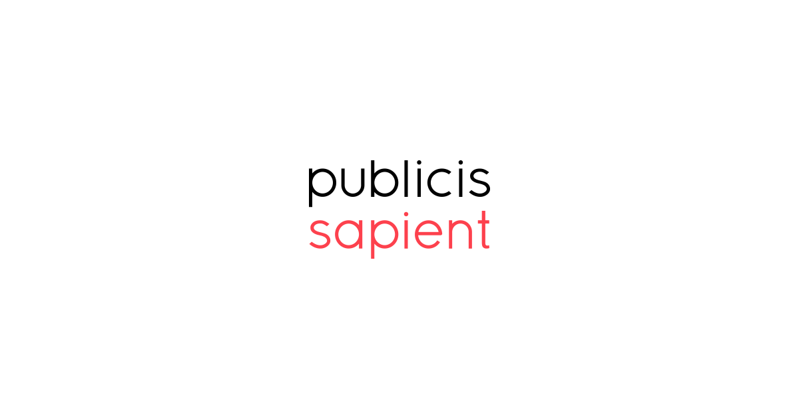

Summary
Over the course of the past 15 years I have worked for several
companies in various web developer roles. This has involved the
maintenance and continued development of commercial web sites
and online products. I currently work for a company called
Publicis Sapient, who are experts in helping establised organizations by partnering with
them to their future, digitally-enabled state, both in the way they work and the way they serve their customers
I have commercial experience working with technologies such as
C#, .NET, Node.js, JavaScript and React. This has involved
personally developing architecture and applications and also, in
my more senior roles, guiding and assisting other developers. I
currently work in a development environment that employs an
agile approach using the Scrum framework. This includes test
driven development, code reviews and continuous deployment.
My aim for the future is to expand on the knowledge base I
currently have and continue to be involved in the architecture
and design of web based applications from the ground up.
Skills & Technologies
C#
.NET Core
Node.js
AWS Lambda
MySQL
DynamoDB
Elasticsearch
RabbitMQ
Docker
Serverless
AWS
Google cloud platform (GCP)
React
TypeScript
CSS
Sass
Bootstrap
Git
DevOps
TFS
Octopus Deploy
CI/CD
xUnit
Jenkins
SpecFlow
TDD
Agile
Scrum
Used in current role
JavaScript
Experience, 4+ years
React
Experience, 2+ years
.NET
Experience, 10+ years
Google Cloud Platform
Experience, 3+ months
Experience

Publicis Sapient
Senior Consultant Developer
Feb 2019 - current
Publicis Sapient is a digital transformation partner helping established organizations get to their future, digitally-enabled state,
both in the way they work and the way they serve their customers.
Partners include Lloyds Bank plc, Unilever, Nationwide Bank and Walt Disney.
-
Joined Publicis Sapient as a Full stack developer.
Was immediately contracted to Lloyds banking group to assist the company in
digitising its business user’s journey.
-
Joined the team as the only developer that knows UI development. Helped with
design discussion and training other developers.
Helped modularised their apps, created shared libraries and CI/CD pipelines for UI
applications.
-
Developed API endpoints for the backend service using NodeJs, Loopback I/O and
Jest.
Contributed to moving their backend services to containers using Docker and
Kubernetes.
-
Involved in Client meetings, gathering requirements, determining OKRs and
breaking business epics into stories.
-
Worked in a team of 4/5 developers, employing an agile approach via
Scrum and Kanban framework. Also participated in fine-tuning business requirements,
client presentation and brown bag sessions
Perfect Channel
Senior Developer
Aug 2017 - Feb 2019
Perfect Channel are experts in creating intelligent, enterprise-level auction and trading technologies.
Customers include Christie's, Lloyds of London, TMX Group (Agriclear) and Fonterra (Global Diary Trade).
-
Part of POC/Labs team, responsible for creating new
architectures and solutions based on client requirements and
future expectations.
-
Involved in the refactoring of the company's existing
monolith product into a microservice architecture hosted on
AWS cloud services.
-
Created microservices using a serverless architecture.
Technologies used include AWS Lambda, Node.js, .NET Core,
MySQL, DynamoDB and Elasticsearch.
-
Involved in the company’s adoption of React and TypeScript
as their primary UI technology.
-
Team of 4 developers that employ an agile approach using the
Scrum framework. This includes code reviews and continuous
deployment.
Totaljobs Group
Software Developer
Jan 2017 - June 2017
Totaljobs.com is one of the UK's leading jobs boards,
attracting around 6 million jobseekers every month on the hunt for one of 110,000 live job ads
the site carries at any one time
-
Developed for and maintained the company's enterprise architecture platform. Technologies used include .NET Web API, SQL
Server, AngularJS and TypeScript.
-
Green field project making use of a service based architecture and a single page web application.
-
Created various product integrations for services such as SharePoint, Azure AD and Office 365.
-
Responsible for all aspects of DevOps. This included implementing a release management pipeline using TFS and hosting on
the Azure platform.
-
Implemented unit testing using MSTest and Moq.
-
Implemented acceptance testing using Coded UI Tests.
-
Team of 6 developers that employed an agile approach using the Scrum framework. This included code reviews and continuous
deployment.
Ticketmaster Inc. (LiveNation)
Software Developer
April 2016 - Dec 2016
DC Thomson Family History is a world leader in online genealogy. The company own brands such as FindMyPast and Genes Reunited.
These brands have over 18 million registered users and provide access to over 1.8 billion genealogy
records.
-
Developed for and maintained a host of brand web sites. All of the web sites were public facing, high traffic and high volume.
Technologies used include .NET MVC and SQL Server.
-
Involved in a mixture of green and brown field projects and developments.
-
Experience with multiple ORMs including Entity Framework and NHibernate.
-
Emphasis on database and code optimization and performance.
-
Implemented unit testing using MSpec and Rhino Mocks.
-
Implemented acceptance testing using Selenium.
-
Team of 5 developers that employed an agile approach using the Scrum framework. This included test driven development, pair
programming and continuous deployment.
Fund Assist
Senior Developer
.NET Developer
Nov 2014 - Feb 2016
Pelagon provide a web based activity management platform for digital marketing agencies. Clients include the worldwide advertising
agencies McCann and DDB.
-
Originally hired as a .NET Developer, progressed to become a Senior Developer.
-
Developed for and maintained the company's activity management platform. Technologies used include .NET MVC, .NET Web Forms
and SQL Server.
-
Involved in the complete redesign of the platform from the ground up to make use of newer technologies. This included a service
based architecture and a single page AJAX UI using JQuery.
-
Created mobile UI with responsive design for new platform. This involved researching the available mobile technologies at
the time, such as the first generation of smart phones.
-
Implemented unit testing using MSTest.
-
Implemented acceptance testing using Coded UI Tests.
-
Team of 6 developers that employed an agile approach using the Scrum framework. This included code reviews and continuous
deployment.
Buy4now Ltd
Web and Database Developer
2004 - 2007
Interactive Prospect Targeting is the UK's leading online direct marketing solutions provider. The company own brands such
as MyOffers and Quiz Factor.
-
Originally hired as a summer intern, progressed to become a Web and Database Developer and then a Development and Support
Team Leader.
-
Developed for and maintained a host of brand web sites. All of the web sites were public facing, high traffic and high volume.
Technologies used include .NET Web Forms, classic ASP and SQL Server.
-
Emphasis on database and code optimization and performance.
-
Involved in the company's migration to the .NET platform. This included the redevelopment of applications and internal admin
tools using .NET Web Forms and the adoption of new coding and automated testing standards.
-
As Development and Support Team leader I was responsible for leading a team of 5 developers. My duties included the break
down and organization of development tasks for the team.
Projects:
Smyth Toys Superstores
Woodies DIY
Elverys Sports
Heatons Stores